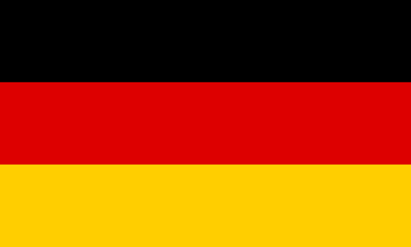
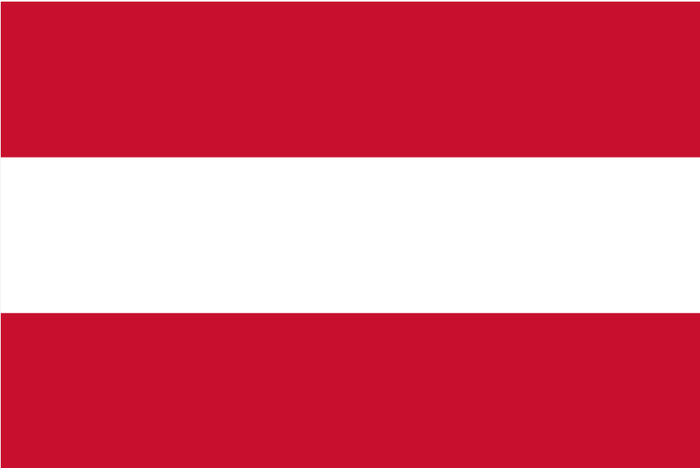
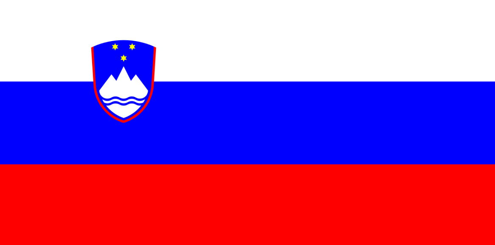
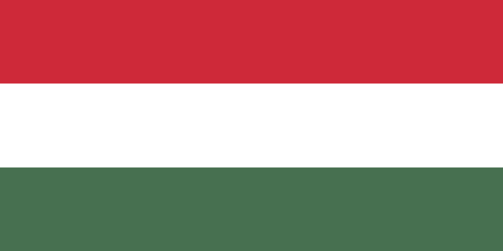

Germany
The colors of the modern German flag symbolize freedom and unity.

Austria
The flag of Austria is considered one of the oldest national flags in the world.

Slovenia
The three stars on the Slovenian coat of arms are taken from the coat of arms of the Counts of Celje.

Hungary
Red represents strength and the blood shed for freedom, white stands for freedom and purity of intent, and green symbolizes hope and the fertile land of Hungary.